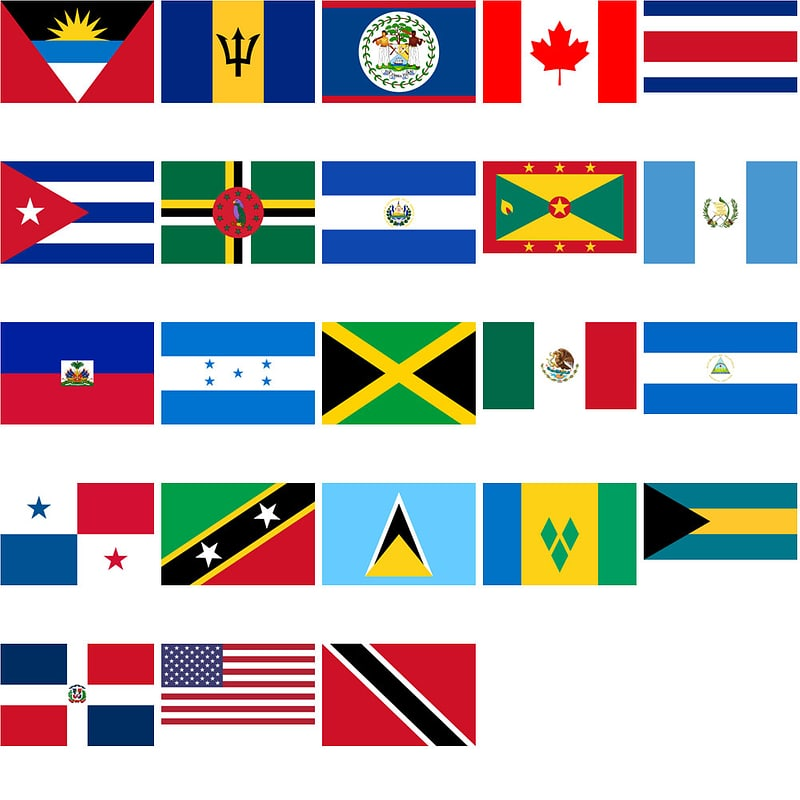

North America

North America is a continent in its own right or a subcontinent of America according to the division adopted for the continents.
It is surrounded by the Pacific Ocean to the west, the Arctic Ocean to the north, and the Atlantic Ocean to the east. The Isthmus of Panama connects it to South America. The West Indies, often attached to North America, close the Caribbean Sea while the Yucatan, Western Cuba and Florida close the Gulf of Mexico.The boundaries of what is called North America differ from those of the United Nations North America region (which includes only Greenland, Canada, the United States, Bermuda, and St. Pierre and Miquelon).